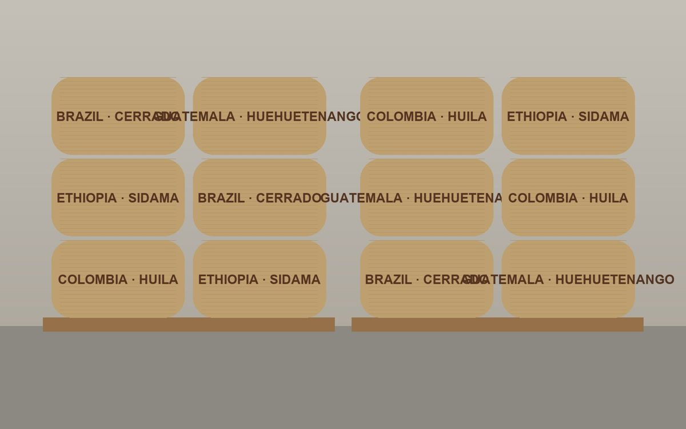
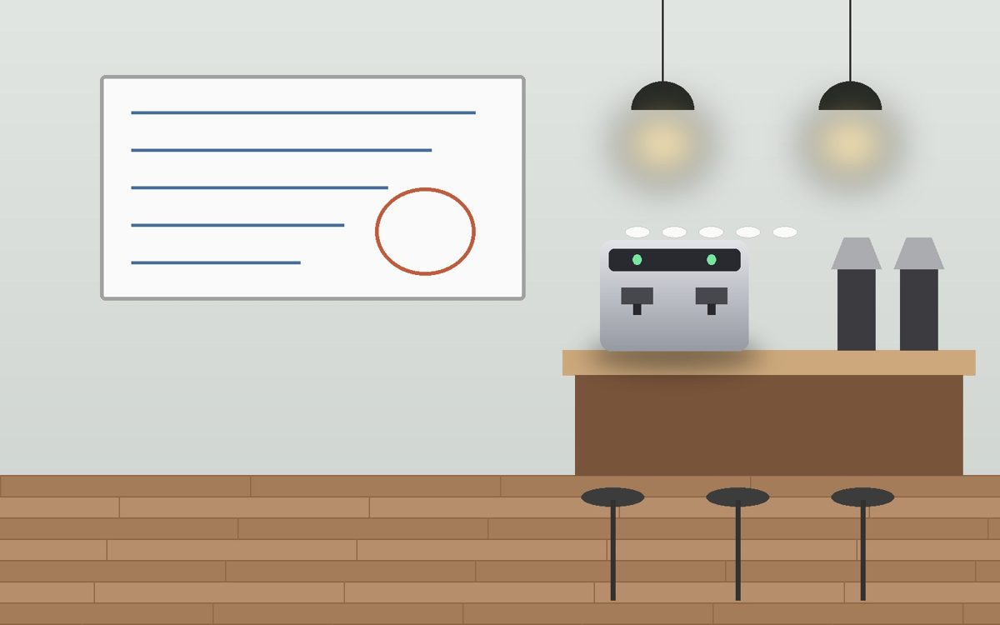

Ondavale began in 2016 with a five kilogram roaster in a shed and a founder who had spent ten years behind espresso machines, including three years competing in barista championships. The first customers were two cafes in South Fremantle that wanted a roaster who would answer the phone and come out when something tasted wrong.
In 2018 we opened a small cafe so people could taste the coffee the way we meant it. In 2019 we bought the 15 kilogram roaster we still use, with an afterburner so the neighbours never smell more than a hint of toast. In 2021 we moved into a 380 square metre warehouse in the West End, so the roastery and the cafe could finally sit under one roof: 220 square metres for roasting, packing and dispatch, and 160 for the cafe.
In 2022 we rebuilt our online shop and started subscriptions. In 2024 the roaster had its drum and burner rebuilt, and it now roasts three days a week. We keep a cupping log that goes back to 2019, and every core blend is roasted to a written profile.
Our wholesale partners are mostly independent cafes, with a handful of restaurants, offices and three hotels. Many have been with us for years. We train their baristas, we visit when the coffee changes with the seasons, and we deliver next day.



How we buy
We buy green coffee by the container share through an importer we have worked with since the start, and taste samples from every lot before it is bought. Prices for green coffee rose sharply in 2024 and 2025; we held our quality and reviewed our prices once a year so our partners could plan.